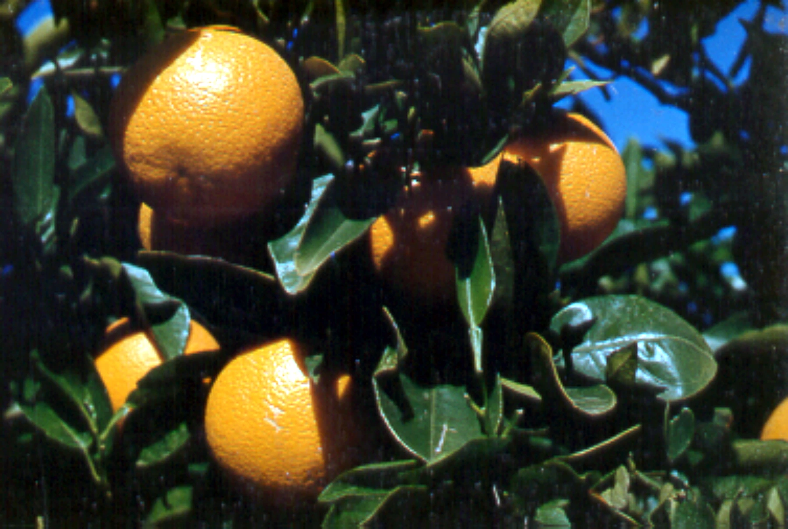
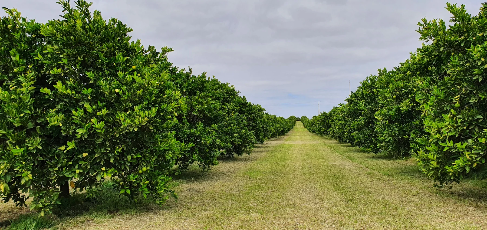

Fruit size and specification
Fruit size and the spread of sizes affect how much can be packed into the required grades.

Explore our Citrus sample program from soil preparation through to post-harvest. Soil and plant results, your variety and the crop on the trees help the team develop a prescription for your orchard. The sample shows products and rates to discuss with the team, not a fixed recommendation for every block.
The fruit needs to meet the market’s requirements for size, rind condition and internal maturity. The amount harvested and the pack-out show how much reaches that standard.
Fruit size and the spread of sizes affect how much can be packed into the required grades.
Fruit finish and damage affect its grade and the amount that can be packed for the intended market.
Rind colour does not establish harvest readiness on its own. Juice content, soluble solids and acidity are assessed against the requirements of the variety and intended market.
The quantity harvested and the share that meets the required grade help assess the season. The team uses grading results when reviewing the block’s prescription.
The variety, current growth and fruit on the trees help explain the test results. We use those details to plan a prescription that suits your orchard, equipment and budget.
The market you supply sets the fruit specification. Grading shows how much of the harvest meets it.
We need to know the variety and rootstock, crop load and condition of the canopy. New shoots, flowers and fruit may be present at the same time.
The team reviews soil results with root-zone conditions and water quality. Any ground, foliar or fertigation recommendation needs to suit the equipment used.
The growth flush and tissue sampled affect how a plant result is interpreted. Earlier applications and harvest timing, including any fruit still carried, provide context for the next prescription.
This sample explains the approach; it is not a prescription for your block. The team confirms products, rates and timing after reviewing your results and block history.
The 15 stages, products and rates follow the revised sample supplied on 14 October 2026. The months are examples of timing; follow actual crop development when discussing the prescription for your block.
This is a review draft, not approved application guidance. Confirm product identities, current directions and compatibility with the team. Products shown at the same stage are not necessarily a tank mix.
No product or rate is listed in the dry-ground column. The source also leaves testing and onsite visits blank. Those blanks are not advice to omit an application, test or visit your block needs. Discuss a custom dry or granular prescription from your soil results, and a liquid prescription from the plant results.
Nutri-Core Soil Activator retains the source name without a product link while its identity is confirmed. Agri-Vive RF also remains subject to identity confirmation. No replacement product has been assumed.
Citrus is evergreen. The source groups the two soil entries under “Dormancy”, but this does not mean leafless dormancy. The numbered maturity entries are separate sample application points, not distinct biological stages or fixed intervals.
Photos illustrate Citrus development, not the sample’s cultivar, block or flowering percentages. The soil and orchard photographs do not show a soil-primer application or a spreading operation. Some stages show the same photograph cropped differently; these are not records of separate dates or applications. Stage selections remain subject to technical confirmation.

Citrus trees may carry new growth, flowers and fruit at the same time. A plant result needs the right sampling context before it is used to change the nutrition recommendation.
Soil results inform dry and granular prescription blends. Leaf and sap results can inform a liquid prescription as the crop develops. Existing results, the water and application equipment are part of that discussion.
There is not yet a Citrus booklet to download. For now, discuss your results and the requirements of your orchard with the team.
Read about Citrus nutritionTell us what you grow, what you want to understand and any results you already have.